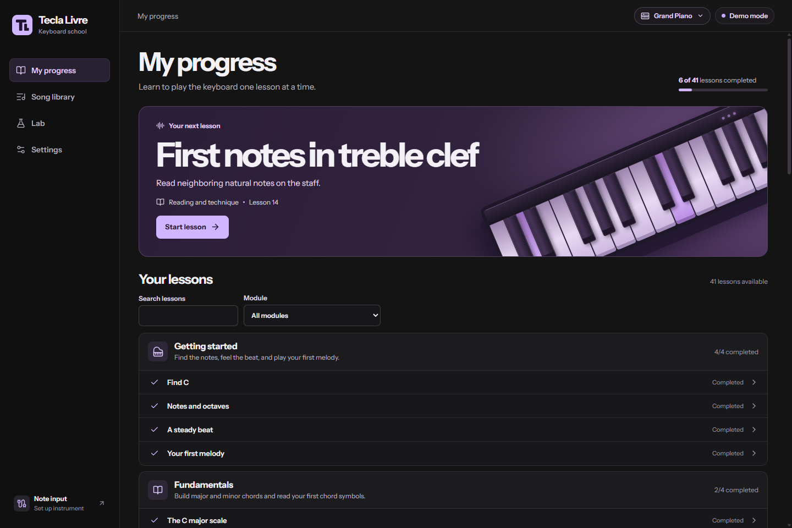
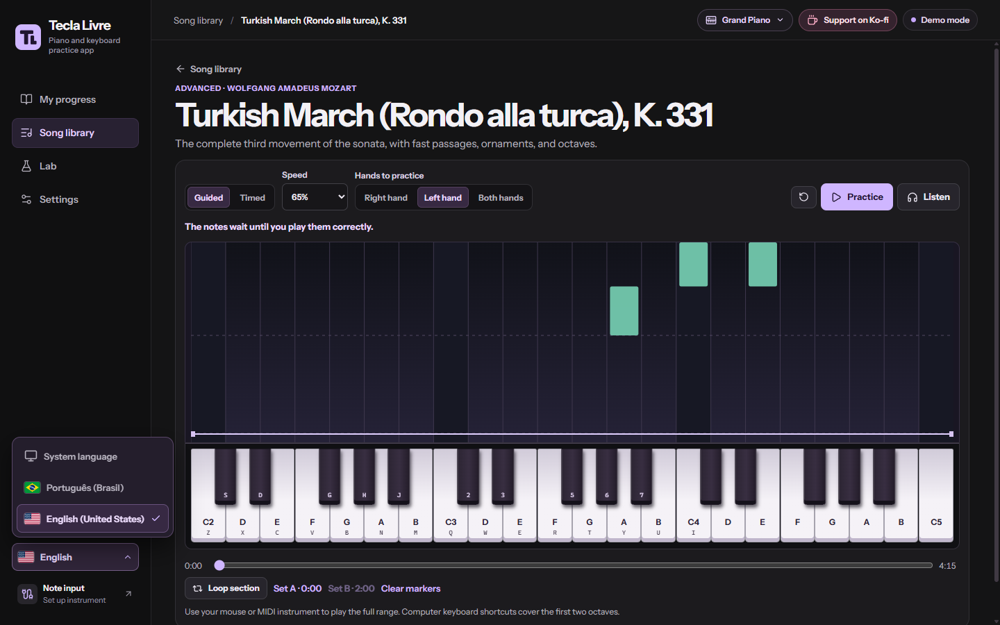
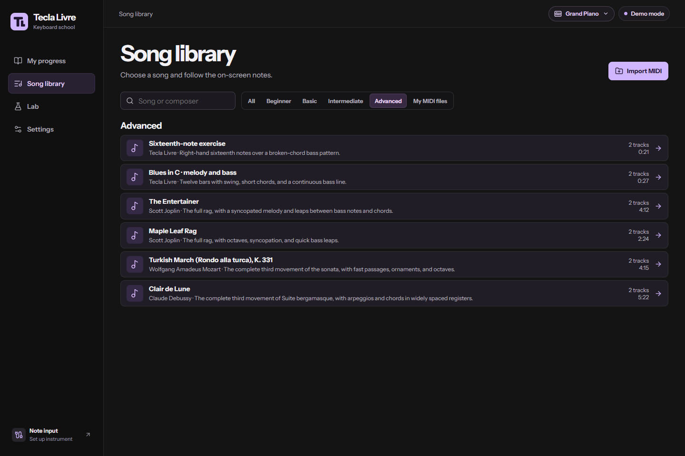
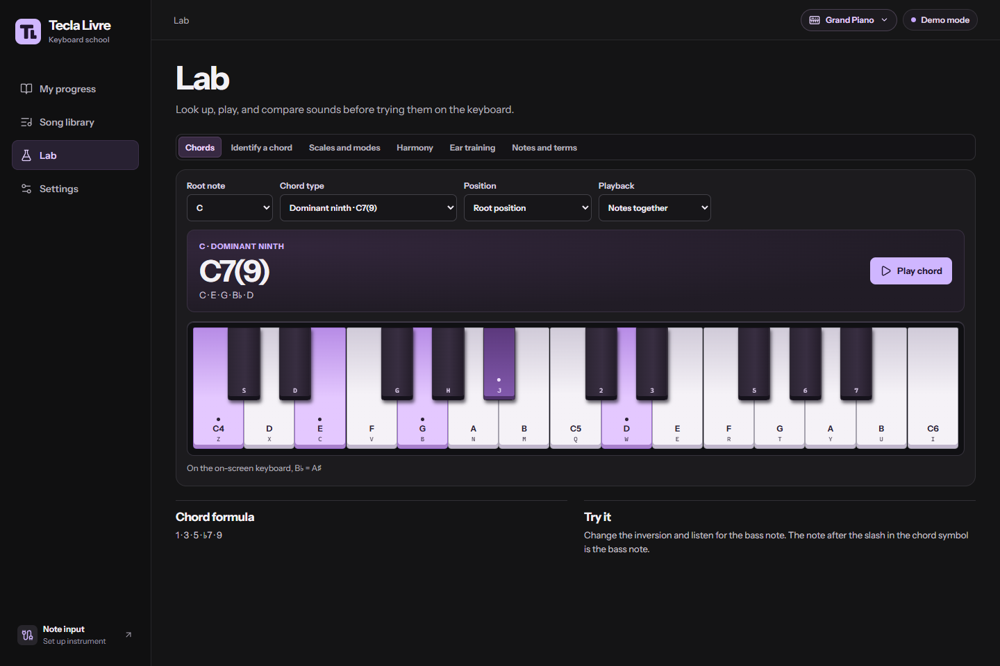

41 lessons in English and Portuguese
Learn rhythm, sight-reading, chords, and accompaniment with demonstrations and exercises.
Take lessons in English or Portuguese and practice with falling notes on screen. Use a MIDI controller or your computer keyboard.
Download free for Windows

Learn rhythm, sight-reading, chords, and accompaniment with demonstrations and exercises.

Practice one hand at a time, loop sections, and pick up where you left off. You can also import your own MIDI files.

Look up chords and scales, listen to chord progressions, and choose a keyboard sound.
The app saves your progress on your computer.